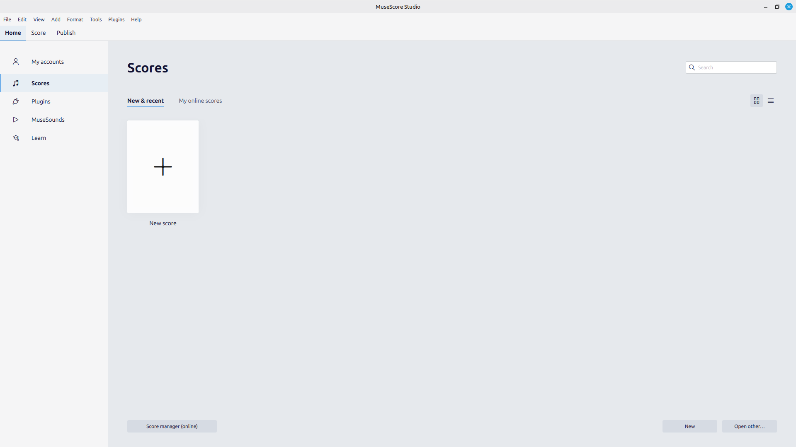
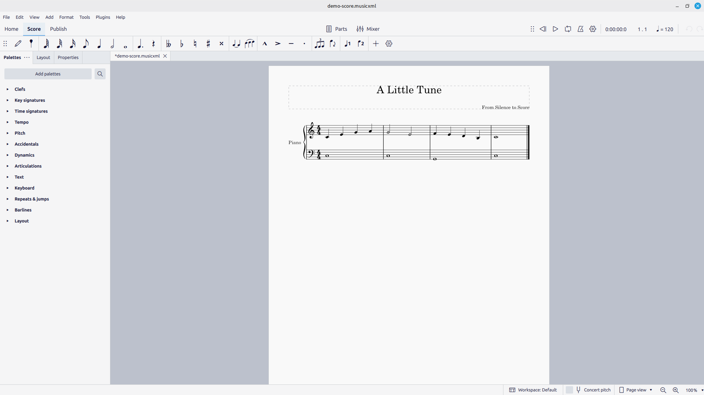

Every other chapter teaches an idea about music. This one teaches a program. That is a fair trade to make once, at the start, because from Chapter 5 onward the software has to be invisible — a pane of glass between your idea and the page — and glass is only invisible when you have stopped noticing it. So we spend Part 0 noticing it: installing MuseScore, learning where everything lives, getting a note onto a staff and a sound out of the speakers. Four short chapters, and then the tool steps out of the way for good.
1.1Getting MuseScore
MuseScore 4 is free — genuinely free, not a trial — and open source. Download it from musescore.org; the site detects your operating system and offers the right build.
- Windows — run the downloaded installer and follow the prompts.
- macOS — open the
.dmgand drag MuseScore 4 into your Applications folder. - Linux — the download is an AppImage. Save it somewhere sensible, make it executable (
chmod +x MuseScore*.AppImageor, in your file manager, Properties ▸ Permissions ▸ Allow executing), and double-click to run. No installation step; the AppImage is the program.
One naming note that trips people up: as of version 4.4 the application is branded MuseScore Studio, while the project and the file format are still called MuseScore. When I say “MuseScore” I mean the program in front of you, whatever the splash screen calls it this month. Everything here is written against MuseScore 4; if you are on the old MuseScore 3, some menus and shortcuts will differ, and it is worth upgrading before you go further.
1.2First launch: the Home screen
Open MuseScore and you land not in a score but on the Home screen — a launcher, not a workspace.

The left rail is a set of top-level destinations. Scores is the one you will use constantly: it lists everything you have opened recently and offers the New score tile that starts the setup wizard. MuseSounds manages the high-quality instrument sounds you can download for playback; Plugins and Learn you can ignore for now. Along the very top sit three tabs — Home, Score, and Publish. Home is where you are; Score is the editor, and it appears the moment you open or create a piece; Publish handles uploading to the musescore.com website, which is not something we do here.
You could click New score now and walk through the wizard, but instead let us open a piece that already exists, so the whole editor appears at once with something in it.
1.3The workspace
Open any score — for the tour, the demo file that ships with our materials, A Little Tune — and the window fills in. This is where you will spend the rest of our time together, so it is worth learning the name of every region before we use any of them.

Reading Figure 1.2 from top to bottom:
- The title bar shows the file name. An asterisk before it (
*A Little Tune) means you have unsaved changes — a small thing you will learn to watch. - The menu bar — File, Edit, View, Add, Format, Tools, Plugins, Help — holds every command MuseScore has. Most you will reach by shortcut instead, but the menus are the map when you forget one.
- The toolbars run just below. On the left, the playback controls (play, rewind, loop) and, further right, the tempo and playback-position readouts. On a second row sits the note-input toolbar, which appears when you are entering notes — Chapter 2’s subject.
- The panel on the left is a dock that can show the Palettes, Properties, or Layout — swappable surfaces for adding and adjusting things. Chapter 3 takes each in turn.
- The score occupies the center — the page itself, on a gray desk, exactly as it will print. You scroll, zoom, select, and edit here.
- The status bar along the bottom is easy to overlook and quietly essential: click any note and it names the pitch, its beat, and more. When you are unsure what you have selected, look there.
Two small settings, set once, will make everything ahead match what you see on these pages. Open Edit ▸ Preferences ▸ Appearance (on macOS, MuseScore Studio ▸ Preferences) and, if you like, set the theme to Light — every screenshot I show uses it. And in View ▸ Show, confirm the Status bar is ticked. Neither changes how MuseScore works; both change how well my pictures line up with your screen.
That is the whole geography. You now know the name of every place a command can hide. In the next chapter we put the center panel to use and get our first notes onto the staff.